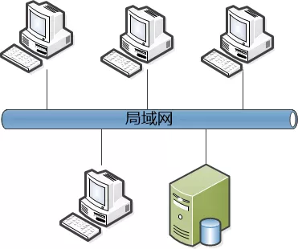
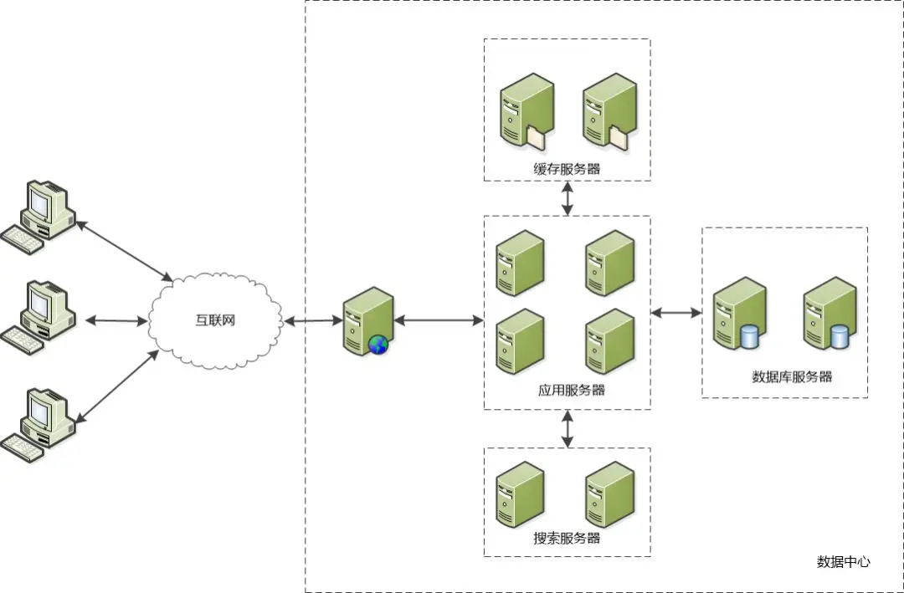
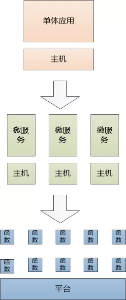
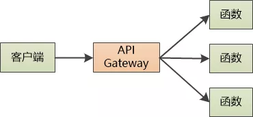
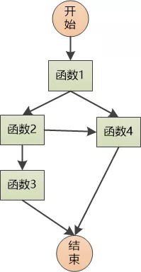

概述
- 梳理一下服务端的演化过程、了解下 serverless
局域网 ==> IDC ==> 云计算 ==> Serverless

局域网时代
上世纪 90 年代，你是一家 IT 部门的负责人，公司需要建立一个信息管理系统，
这时候的系统都是局域网的， 是 C/S 模式的， 业务逻辑主要在客户端软件中， 需要被安装到各个电脑上去，然后访问同一个数据库。

在部署这个系统之前，你需要做很多的工作：
搭建局域网， 购买交换机，路由器。
买服务器，安装操作系统，比如 Window NT
安装数据库软件，例如 Oracle。
然后再把那些 Delphi/VB/PowerBuilder 写的客户端安装到电脑上, 整个系统跑起来了。
每家公司自建数据中心时代
C/S 模式的很大弊端就是客户端更新特别麻烦，不能在用户无感知的情况下完成升级，还有臭名卓著的 DLL 地狱问题，让程序员抓狂。另外服务器能支撑的用户也不大。
Web 兴起后，你们公司的应用也与时俱进，从 C/S 模式变成了 B/S 模式，用户主要使用浏览器来访问应用，业务逻辑在服务器端运行。
这时候，你还需要买服务器，然后放到数据中心去托管，毕竟那里的条件更好，更稳定。
网络不需要自己来搭建了， 掏钱买数据中心的网络带宽就好。 还需要自己安装软件， 比如 Linux 操作系统、Tomcat、Ngnix、MySQL 等等。
随着功能的增加，你还需要新的服务器来处理缓存，搜索等功能。 为了应对高并发、还需要分布式、负载均衡、数据复制。

你需要仔细地规划， 看看这些缓存、搜索、数据库、 负载均衡等都需要什么样的服务器，有些要求 CPU 很强，有些要求内存很大，有些要求硬盘很快。
总之，自己运维这样一套系统，非常麻烦
虚拟化时代
但是，如果你的网站没人访问了，这一套复杂的系统，这些昂贵的服务器就会变成摆设，你想卖都很难卖掉，这是巨大的浪费。
一个想法就会浮现出来：
-
为什么要用物理服务器？
-
谁要是能提供虚拟机给我就好了！
-
用完了就可以“扔掉”！
于是那些有实力的大厂就这么做了，有亚马逊开始，把平时空闲的物理服务器的计算能力，存储能力统一管理，统一调配，对外提供的就是虚拟机。
他们把这种方式叫做云计算，你使用了云计算以后，有很多好处：
-
物理服务器不用买了，申请虚拟机就可以了。什么样的 CPU， 多少内存，多大的硬盘，对应的价格也不同。
-
操作系统会按照你的要求自动给你安装好。网络自然不用操心， 要多大带宽直接买就行。
-
这些虚拟机可以包月、包年计费。但是，如果没有人访问你的应用，没有流量，你也得掏钱。
- 这里的意思是只要你的虚拟机开起来，不管有没有人访问，你就得付费.
- 另外即使你进行关机节约成本，(关机可以节约 CPU 和内存的成本) 那么磁盘那部分费用也是省不了的.
理想模式: Serverless
想必你的脑海中已经浮现出了解决方案：
-
不要再考虑什么物理服务器/虚拟机了， 把代码上传到云端，直接运行。
-
按使用情况（如 CPU 时间、内存大小）来收费
如果没有人访问你的应用，就不要部署它，这样只会占用一点点存储空间，不用使用 CPU 和内存；如果有人访问，把应用迅速部署到某个服务器上，执行这次请求，返回给用户，然后卸载这个应用。
和之前的方式相比，最大的特色是即用即走，不会在服务器/虚拟机中常驻。
但是这么做可能吗？ 不行，应用的粒度太大，一个应用几十、上百模块，每个请求来了就部署整个应用，只执行那么一点儿代码， 然后就卸载掉。
如果每个请求这么来回地部署和卸载，你是疯了吗，兄弟？
那微服务呢？粒度还是太大 ！ 如果是微服务中的一个 API，或者说就是一个“函数”呢？ 这个粒度应该差不多了。
这里说的函数到底是什么？ 需要看具体的业务来划分，比如搜索产品，图像转换， 它需要足够小，足够单一，能快速启动，运行，卸载。

一个“函数”真的只做一件事情，并且不保持状态。 这样一来它可以轻松地被扩展到任意多的服务器/虚拟机/docker容器中去。请求多了就扩容，请求少了，就收缩，请求没了，就卸载，实在是太爽了。
这种方式现在称为Serverless，并不是说没有服务器，而是说服务器对用户来说是透明的。 应用的装载、启动、卸载，路由是需要平台来搞定。
Serverless 的特点
Serverless 的开发模式和运行模式类似这样：
-
程序员编写完成业务的函数代码。
-
上传到支持 Serverless 的平台，设定触发的规则。
-
请求到来，Serverless 平台根据触发规则加载函数，创建函数实例，运行
-
如果请求比较多，会进行实例的扩展，如果请求较少，就进行实例的收缩。
-
如果无人访问，卸载函数实例。
如果有多个函数，怎么确定调用哪一个？ 肯定需要一个东西来转发一下。

如果业务比较复杂，一个函数搞不定怎么办？ 可以把多个函数给编排起来！

按需装载，自动伸缩，不用你苦逼地去规划硬件，安装软件，还可以按照使用情况付费，这么好的东西，我们是不是马上投入 Serverless 的怀抱？
慢着！
为了达到上面的目标，你必须得牺牲一个很重要的东西：状态。
函数没有状态的，每次启动都可能会被部署到一个全新的“服务器”中，这就有两个问题：
-
用户的会话状态肯定是无法保持的，像 session sticky 这样的功能就别想了。
-
函数无法做本地的持久化，没法访问本地硬盘的任何东西（服务器看不见了，怎么能看见硬盘呢？）。
所有想持久化的东西必须得保存到外部的系统或者存储中，例如 Redis，MySQL 等。 很明显，这些东西也应该以“服务”的方式来呈现，即Backend as a Service (BaaS)。
如果你的应用无法拆分成无状态的函数，是无法享受 Serverless 带来的种种好处的。
Serverless 更适合那些无状态的应用，例如图像和视频的加工，转换， 物联网设备状态的信息处理等等。
谈一下虚拟机和容器云的区别
-
容器化解决的最大问题是: 跨越开发环境、测试环境、生成环境的环境一致性问题.
-
容器编排工具(Kubenetes)最大的作用是:
-
对内: 可以方便的把进程抽象为任意多个微服务，并且方便的把每个微服务做到自动化扩缩容.
-
对外: 可以将内部众多机器抽象, 对外呈现出一台超大机器.
-
虚拟机时代, 上述 2 个功能都需要每个公司自行制定规范、研发以及维护.